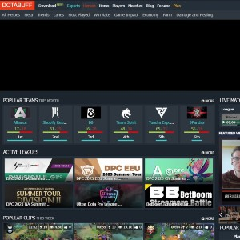
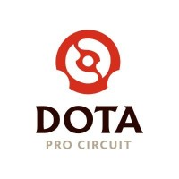
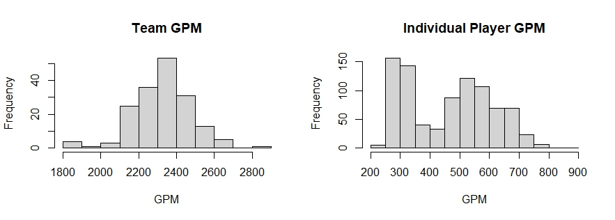
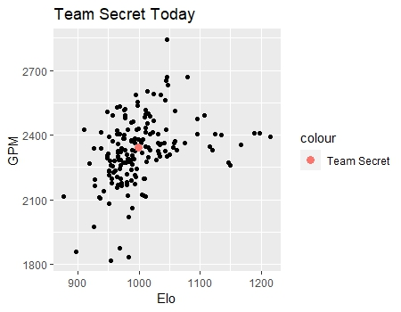

Everything about The Data
Summary
Despite Dota 2's popularity, no widely available database exists for this kind of project. There are, however, various websites and API's that contain statistics sufficient for the project. Using multiple sources, primarily those detailed below, I created an accurate database with nearly all the statistics available on teams and players in general. I also created a custom power ranking system using the Elo algorithm since everything I could find on the subject was inaccurate for reasons that will be discussed later. After collecting the data, I explored it using statistical graphs and methods. Then, I decided which features I wanted to use to build the models. Finally, I normalized all the relevant features so that they would be more useful in logistic regression output.
Data Collection
Nearly all of the data comes from one of two sources: Dotabuff or OpenDota API. If I discovered that some of the data was wrong, I would get the correct data from various sources that are unlisted such as official team pages, betting websites, or Liquipedia, the esports wiki.
Dotabuff
 Much of the individual player data came from a Dota 2 statistical website called Dotabuff. It contains statistical data regarding teams, players, and individual matches. There is no Dotabuff API, so I utilized web scraping to gather information from this resource. Luckily, nearly all of the information available on Dotabuff proved to be accurate when cross referencing it with actual game data and official team websites. Thus, whenever the other sources of information were discovered wrong, I would generally turn to Dotabuff for the correct answer.
OpenDota API
OpenDota is a REST API that provides free data related to many aspects of Dota 2. I primarily used it for finding match data as much of the other data available on players and teams was inaccurate.
Dataset Description
In the end, the dataset is a collection of data frames, the largest comprising more than 2700 observations of 48 variables. Variables include match information and the participating team statistics, with each match represented as a separate observation. As Dota is a team game, most of the data actually used for building the models deals exclusively with performance of the team. However, there was no reliable source for the team statistics, so I built all of the team statistics using my own methods.
Player Statistics
 Individual player statistics were gathered from Dotabuff. This includes features such as gold earned per minute (GPM) and experience earned per minute (XPM) for all 5 players on the team, and the GPM, XPM, and last hit number for the position 1 and position 5 players on every team.
Team and Match Statistics
I included only matches from the Dota Pro Circuit (DPC), a professional esports tournament system for qualifying for the world championship: The International (TI). Reasoning behind this decision and many others will be included in the Challenges and Limitations section. Using the individual player statistics, I was able to group all the data into team statistics. These team statistics were calculated as the summation of the respective statistic across each of the 5 players. Match statistics include categorical variables such as division type and the game version that the match was played on.
Exploratory Data Analysis
Before I began feeding the factors into the algorithms, I wanted to examine the variables to take note of any trends.
One important observation of which to take note is that player statistics were generally skewed and bi-modal.
On the other hand, team statistics were approximately normal, as you can see in the histograms below.

Upon further consideration, this is exactly what one would expect!
The two roles in the game correspond directly to the bi-modal nature of the individual player statistics.
Also, as the team statistics are the summation of a random variable, they are susceptible to the central limit theorem.
Challenges and Limitations
Team/Game Volatility
At the onset, I realized that there would be several major problems with the data that I could find from sources like Dotabuff and OpenDota API, listed below:
- Players might not try very hard in matches if there is not a lot of money on the line.
- Dota 2 undergoes regular updats that change the rules and gameplay.
- Many teams undergo impactful roster changes in the middle of a season.
- All the data sources I could find simply aggregated lifetime statistics for each team and player.
Let's consider the performance of Team Secret, a professional team, as an example. Last year, Team Secret achieved an impressive second place in TI, earning $2.5 million. However, this year, the team is struggling to compete in the lowest skill brackets of DPC tournaments and has been disqualified from the circuit. The reason for this decline is that all but one member from last year's roster were replaced with new players. It's not uncommon for many teams to undergo similar changes every year, if not more frequently. Additionally, gameplay updates since last year have introduced several new heroes and strategies since the previous TI.  This constant flux in team compositions and gameplay mechanics poses a significant challenge for accurate predictions, despite the thriving betting scene surrounding professional matches. With the widely available data being historically biased by including the previous exceptional performance by Team Secret, the accuracy of game prediction for current matches is greatly reduced. To address this issue, I created team statistics based on aggregated values of the players currently playing for each team.
To address these issues, I started by including only DPC tournament games since every DPC tournament boasts a minimum prize pool of $75,000, ensuring that the included matches would feature players giving their utmost effort. As DPC games use the official game version for all their games, this selection also influenced the implementation of the Elo algorithm, which helped account for variations addressed in other power ranking systems like Glicko or Glicko-2. Furthermore, the DPC requires a roster lock for each participating team at the beginning of the season, unlike other tournaments. Finally, I created my own team statistics based on aggregated values of the players currently playing for each team, and I developed my own power ranking system to avoid historic bias based on a team's previous performance.
Data Inaccuracies/Irrelevancies
Much of the data widely available through API's, including OpenDota, was completely inaccurate. For example, the OpenDota API failed to correctly list the active team members on most teams, sometimes claiming a team had as many as 15 active players. After cross checking the data from OpenDota, I discovered that all of the information on team rosters, team Elo scores, and player statistics was wrong. Similar problems were faced with other API's and resources that I tested. I addressed this issue by including information from Dotabuff, as discussed earlier. Also, I corrected for the Elo inaccuracies by customizing my own Elo rankings through modification of the k-parameter and the win/loss outcome mappings.